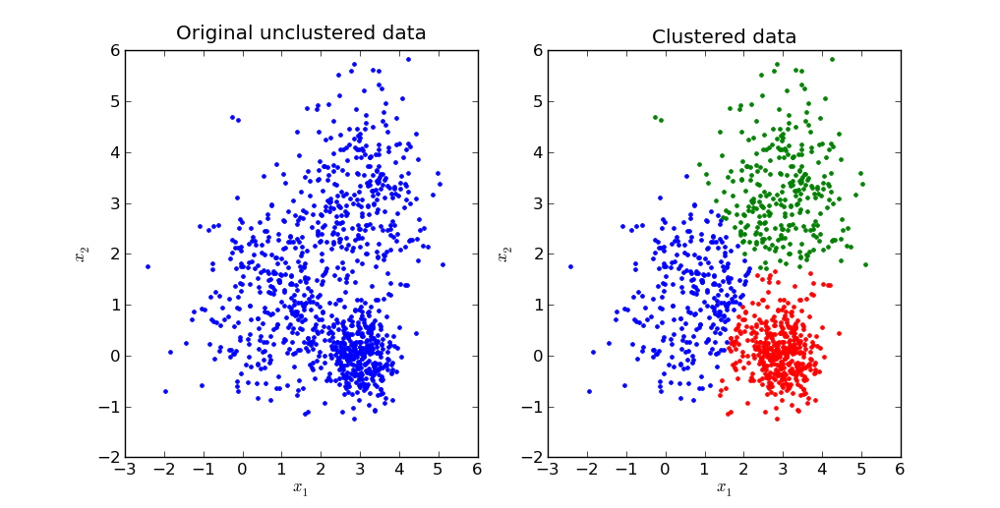
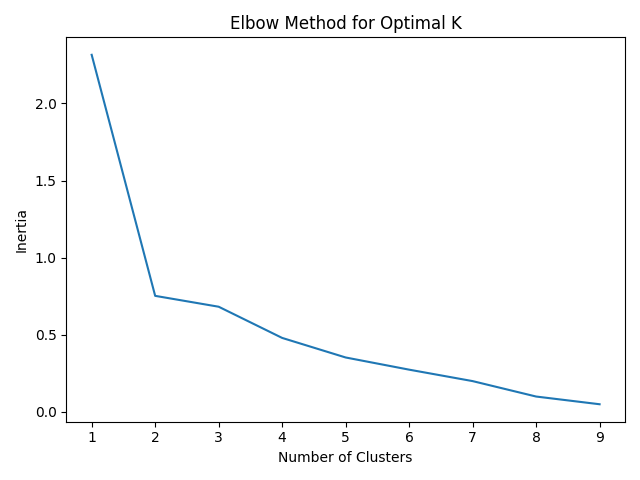

Boomers have decided to explore machine learning because they are VERY tech-savvy and willing to learn. In this assignment you will help them accomplish various tasks and stay one step ahead of their mortal enemies, the bag ban and participation trophies. The goal of this assignment is to introduce basic machine learning concepts and provide a foundation for how to cluster data.
In this assignment we will begin to explore the power data has in informing machine learning decisions. These boomers require an effective way to manipulate data attributes. Numpy is a python package that will help accomplish this. You will use the knowledge gained to help these boomers implement a K-means clustering algorithm. You will run this algorithm on two different datasets and implement sklearn's clustering algorithm on both data sets. Finally, you will make an elbow curve plot to discover the optimal number of centroids.
You can click here to get the stencil code for this homework. Reference this guide for more information about Github and Github Classroom.
The data is located in the data folder. To ensure compatibility with the autograder, you should not modify the stencil unless instructed otherwise. For this assignment, please write your solutions in the respective .py files. Failing to do so may hinder with the autograder and result in a low grade.
As per usual, don't forget to activate the course's virtual environment when running the files in this assignment! :)
In this assignment, you will be using the Python package matplotlib to plot graphs and images. For most machines, the matplotlib package that we installed in HW0 (that is available in the virtual environment) would work fine. However, some machines that have an updated version of their operating system might run into a Segmentation fault. In this case, try to type these two commands in to your terminal:
pip uninstall matplotlib
pip install matplotlib
These two command lines will first uninstall your existing version of the matplotlib package, and then install the latest version of matplotlib to your computer. Don't forget to do these two steps with your virtual environment activated!
If you run into any problems graphing your images or plots, feel free to come to TA Hours to get your issue resolved!
K-means clustering is an algorithm designed to sort data into groups based on similarity. To determine the groups, K-means repeatedly performs an update step, detailed by the following pseudocode:
For each data_point:
Determine closest centroid
For each centroid:
Determine centroid location as average of data_points which are closest to that centroid
To determine the closest centroid, you will be using a variation of Euclidean distance: distance = ∑i(ai - bi)^2 where ai, bi are the different features of data_point a and data_point b (hint: refer to the numpy way to calculate euclidean distance). To determine the centroids' new locations, you average together the data points for which that was the closest centroid. This means that a centroid is defined by its own feature set.
The real power of K-means comes from measuring distance with meaningful features of a dataset. For example, some meaningful features of a song might include its acousticness, danceability, and tempo. By applying K-means to a collection of songs, where the distance function between songs is based on these features, our resulting clusters will divide our songs into genres.
In this assignment you will be implementing your own version of K-means. We have provided you with stencil code located in kmeans.py and specific instructions about the methods you will need to fill in. Your first step is to fill in the outlined methods which will later be used on two data sets to test your code.
Note: Please follow the input output specifications for each class member functions in the Kmeans class.
In this part img_compression.py takes in an image and breaks it up in RGB pixel values. It then uses these three values as features in your K-means algorithm to cluster by color similarity to compress the provided image. You do not need to change any code for this section, but run the file to see what clusters it returns.
For this problem, use the tiger.jpg image as the input to your program. To run the file, execute the following command:
$ python3 img_compression.py [-d PATH/TO/tiger.jpg]
where PATH/TO/tiger.jpg is the path to the image file. By default, without the -d flag, the data file path is ../data/ml/tiger.jpg. Successfully running the script will create files named centroids.txt and tiger.jpg in a new folder named output, which will contain the saved clusters and the compressed image.
Note: This part should take no longer than 30 minutes to run for 50 iters if your k-means is implemented correctly.
We have written a function img_distance which calculates an element-wise (pixel-by-pixel) difference. We won't be grading this difference, but to check if your k-means is implemented correctly, note that with K=16
and max_iters = 50, our distance is around 62. This is purely for your reference.
Once you have filled out kmeans.py you can proceed to use your k-means class on clustering
songs by latent audio features. This data can be found in spotify.csv in the data directory
and consists of 600 top Spotify songs from 2010-2019.
We have included TODO comments in song_clustering.py to help with completing
this part of the assignment. You should only
have to edit functions in this file, and please note the input/output specifications of the functions,
as well as the expected output behavior (Part 2.6 below).
You will have to complete the following parts in the cluster_songs function, completing
additional functions as specified.
The original dataset consists of 13 features (Beats per Minute, Danceability, Acousticness, etc), but we will be using a subset of the features for the purposes of this assignment. We have written preprocessing code to extract three features from this dataset, specifically "acousticness", "speechiness", and "liveness". Your task is to use these three features to cluster the songs into clusters of similar songs.
Our preprocessing code removes outliers from the dataset. Please fill out the min_max_scale
function. Performing MinMax scaling prevents different scales of the data feature columns from
influencing distance calculations. Each column of the dataset should be standardized by the formula
found in the function's docstring.
This dataset can be visualized in 3D, and we have written a function visualize_songs_clusters
to do so. You will use this same function to visualize the raw data as well as the cluster centroids
for both your custom kmean object and the library sklearn.cluster.KMeans object
(more details in Part 2.5).
By passing in optional centroids and centroid_indices arguments, you can visualize
each datapoint and which cluster it belongs to. Please note the optional is_lib_kmean argument
which should be set to True when visualizing results in Part 2.5.
Once you have written your k-means clustering algorithm, you might be wondering how many clusters should you use for a dataset. The number of clusters is called a hyperparameter of the machine learning algorithm and hyper parameter tuning is an important part of machine learning. One method to computing the number of clusters is plotting out the number of clusters and the inertia of the cluster assignments.
Inertia is defined as the sum of the squared distances between each data point and the centroid of its assigned cluster.
As more clusters are added, inertia decreases. However, there are diminishing returns to this. The ideal number of clusters is a judgement call by looking at the “elbow point” of this graph where adding the next cluster does not significantly reduce inertia.
In song_clustering.py we have provided an elbow_point_plot() function that takes
in an np array of the number of clusters (x-axis) and an np array of inertia values (y-axis). The output
graph will be saved to the output directory as elbow_plot.png.
Analyze the graph and determine the ideal number of clusters. Below is an example of an
elbow point curve of a different dataset.

scikit-learn
Programming machine learning algorithms is a good way to internalize concepts and get a better understanding
for how they work. However, in practice, machine learning libraries are often used to speed up data analysis.
For this part of the assignment, we will perform K-means clustering using scikit-learn, a popular machine learning library.
Click here to learn more about scikit-learn
and here
for the documentation on its KMeans class
Fill in the sk_learn_cluster function using sklearn.cluster.KMeans object.
The function takes in X - the dataset of Spotify data, and
K - the number of clusters and should output an np array where every index contains the
cluster of the corresponding vector as well as the coordinates of the cluster centers.
Hint: This can be done in just 3 lines of code!
You should also visualize your cluster results with the same visualize_songs_clusters used
previously, except this time with is_lib_kmean=True.
To run the file, execute the following command:
$ python3 song_clustering.py [-d PATH/TO/spotify.csv]By default, without the
-d flag, the data file path is ../data/ml/spotify.csv.
Calling visualize_songs_clusters will save the generated plot to the output folder.
You should call this function 3 times to generate plots of the raw data, clustered data
with your kmeans object, and clustered data with the sklearn.cluster.KMeans
object.
The cluster centers and centroid indices for each datapoint for both your model and the scikit-learn model
will be exported to a file named song_clusters.json. Note you must return these 4 items
from your cluster_songs function.
Successfully running the script will create the following files in your output directory based on
running solely song_clustering.py:
data_raw.pngdata_clusters.pngdata_clusters_sklearn.pngelbow_plot.pngsong_clusters.jsonAnswer the following questions in writeup.md.
Explain your K-Means algorithm. What are the parts of your algorithm, and how do they work together to divide your samples into different clusters?
What is K-Means used in the context of image compression? That is:
What is the difference between supervised classification, supervised regression, and unsupervised learning? Give an example of an algorithm under each, specifying the type of data that the algorithm takes in and the goal of the algorithm, and an explanation for why they are a supervised classification/supervised regression/unsupervised algorithm.
The growing research field of machine learning fairness attempts to prevent bias in ML systems. Research efforts to computationally define fairness have given rise to a debate about what it means for a machine learning model to be “fair.” Fair K-Means is one example of an attempt to define and improve fairness in clustering problems. The goal of the following questions is to demonstrate how you could incorporate machine learning fairness in your K-means implementation and explore the limitations of this approach to fairness.
Your responses should be thoughtful, provide justification for your claims, and be concise but complete. See the response guide for more guidance.
Read this summary of a research paper proposing a clustering algorithm called Fair K-Means. If you’re interested, the full paper is linked here.
Give an overview of how you would modify your Kmeans class to implement Fair K-Means in kmeans.py. Describe any methods you would add and where you would call them. You don’t need to understand the mathematical details of the Fair K-Means algorithm to have a general idea of the key changes necessary to modify your solution.
How does the Fair K-means algorithm define fairness? Describe a situation or context where this definition of fairness might not be appropriate, or match your own perception of fairness.
Are there any situations in which even a perfectly fair ML system might still cause or even exacerbate harm? Are there other metrics or areas of social impact you might consider? Justify your opinion.
After finishing the assignment (and any assignment in the future), run python3 zip_assignment.py in the command line from your assignment directory, and fix any issues brought up by the script.
After the script has been run successfully, you should find the file ml-submission-1951A.zip in your assignment directory. Please submit this zip file on Gradescope under the respective assignment.
(If you have not signed up for Gradescope already, please refer to this guide.)
Made in Spring 2020 by Karlly, Huayu, and Arvind, adapted from the previous TA staff for CS1951A. Revised for Spring 2021 by JP & Daniela. Updated in Summer 2021 by Nam and Evan. Spotify dataset sourced from Kaggle.